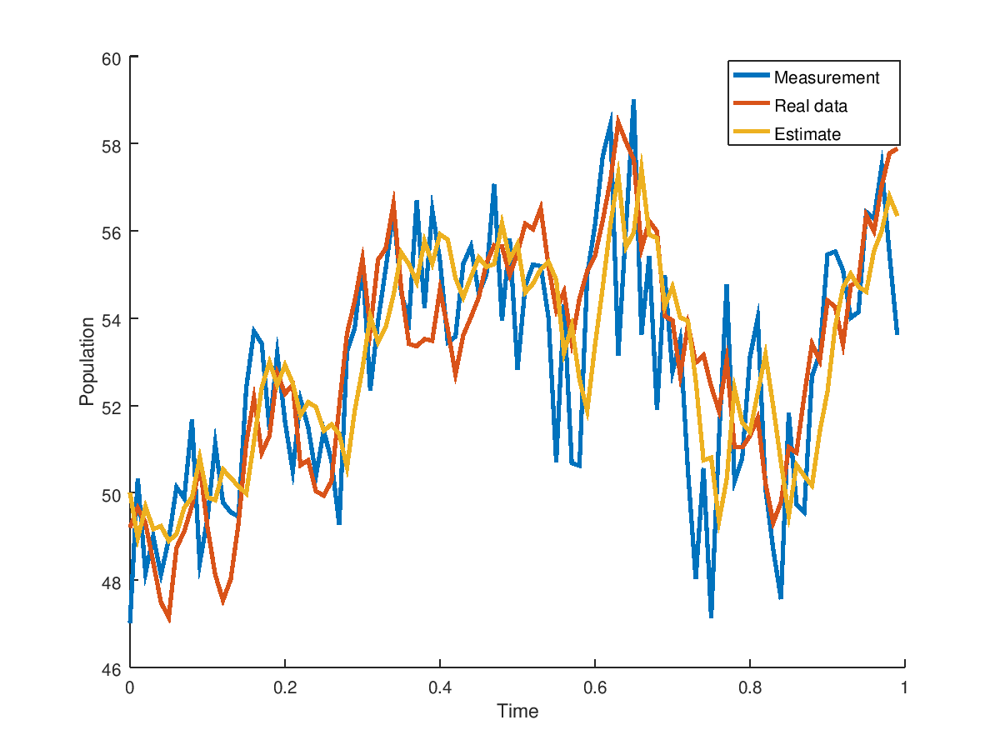
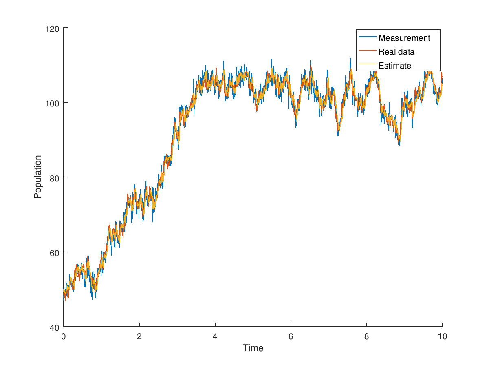

Here we will describe the discrete discrete Extended Kalman filter that is of the square root flavour. Square root does not change the math behind the algorithm, but ensures that numerical rounding errors that are natural to a computer do not prevent the computed covariance matrices maintaining their property of being positive semi definite. For a linear model, the Extended Kalman Filter is equivalent to a regular Kalman filter. Check out this thesis - chapter 3 for a detailed explanation.
For the discrete-discrete Kalman filter the state evolves discretely and the measurements are discrete in time. The code is in matlab_implementation/discrete_discrete of https://github.com/mannyray/KalmanFilter. The function header in ddkef.m is:
function [estimates, covariances ] = ddekf(f_func,jacobian_func,dt_between_measurements,start_time,state_count,sensor_count,measurement_count,C,Q_root,R_root,P_0_root,x_0, measurements)
For those familiar with the Kalman filter and notation are familiar with the naming of the variables. However, to be extra sure it is always best to run help ddekf. We will break down an example below.
Example 1
The example is located in matlab_implementation/discrete_discrete/examples/logistic.m. You can cd into the directory and then run logistic or do it step by step as described below. First set the seed and include the path to matlab_implementation/discrete_discrete:
clear all;
%include code
addpath('..')
%setting the seed for repetition of experiment
isOctave = exist('OCTAVE_VERSION', 'builtin') ~= 0;
if isOctave==true
randn("seed",1);
else
rng(1);
end
Consider the nonlinear discrete logistic growth model. The continuous example can be found in CD-EKF tab.
%define discrete logistic growth model and its jacobian
rate = 0.01;
max_pop = 100;
next_func = @(x,t) x + rate.*x.*(1 - x/max_pop) + 0.*t;%time independent
jacobian_func = @(x,t) 1 + rate - (2*rate*x)/max_pop + 0.*t;
Set the time between each state evolution and the noise covariance and measurement matrices:
%in this model the time is only necessary
%for plotting an interpreting the results.
outputs = 1000;
t_start = 0;
t_final = 10;
dt = (t_final - t_start)/outputs;
%discrete noise covariance
Q_d = 1;
%sensor noise covariance
R_d = 3;
%measurement matrix
C = 1;
state_count = 1;
sensor_count = 1;
Set the initial estimates, covariances as well as generate data in order to run the filter:
%model results if there was no process noise
ideal_data = zeros(state_count,outputs);
%actual data (with process noise)
process_noise_data = zeros(state_count,outputs);
%noisy measurements of actual data
measurements = zeros(sensor_count,outputs);
%initial estimate and covariance
%the initial estimate in this case
%matches the actual data
x_0 = max_pop/2;
P_0 = 1;
%initial condition for ideal
%and real process data
x = x_0;
x_noise = x_0;
%generate the data
for ii=1:outputs
x = next_func(x,ii);
ideal_data(:,ii) = x;
x_noise = next_func(x_noise,0) + chol(Q_d)'*randn(state_count,1);
process_noise_data(:,ii) = x_noise;
measurements(ii) = C*x_noise + chol(R_d)'*randn(sensor_count,1);
end
Filter the data:
%filter the noisy measurements
[estimates, covariances] = ddekf(next_func,jacobian_func,dt,t_start,state_count,...
sensor_count,outputs,C,chol(Q_d)',chol(R_d)',chol(P_0)',x_0, measurements);
Plot the results:
%compare the measurements, estimates and true state.
%The ideal data is not plotted and is only for reference.
time = 0:dt:(outputs-1)*dt;
h = figure;
hold on;
plot(time,measurements);
plot(time,process_noise_data);
plot(time,estimates(1:end-1));
legend('Measurement','Real data','Estimate');
xlabel('Time')
ylabel('Population')
h = figure;
hold on;
limit = 100;
plot(time(1:limit),measurements(1:limit),'LineWidth',2);
plot(time(1:limit),process_noise_data(1:limit),'LineWidth',2);
plot(time(1:limit),estimates(1:limit),'LineWidth',2);
legend('Measurement','Real data','Estimate');
xlabel('Time')
ylabel('Population')
to produce (in Octave)


Example 2
The example is located in matlab_implementation/discrete_discrete/examples/linear.m and has a model with two states. The script is very similar to the one in the previous example. The result produced is
ans =
5.0540e-07 2.4509e-08
2.4509e-08 4.9806e-07